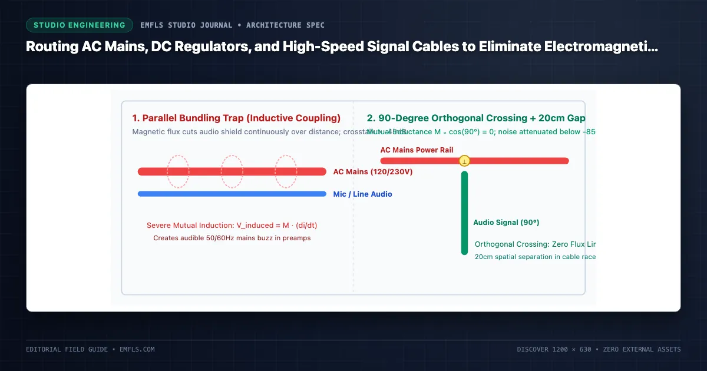

Acoustics, Calibration & Asset Architecture
Routing AC Mains, DC Regulators, and High-Speed Signal Cables to Reduce Electromagnetic Interference

A shared cable sleeve makes a desk look tidy, but long parallel runs can let unshielded AC mains couple hum or buzz into nearby low-level analog cables. Run power and sensitive signals in separate paths. Where the paths must meet, crossing at 90 degrees minimizes mutual magnetic coupling compared with a long parallel run. Residual coupling still depends on the full loop area and the geometry of the current return paths.
Scroll horizontally or focus the diagram and use the arrow keys to see all labels.
The Hidden Pitfall of Aesthetic Cable Tucking
In modern workspace design, "cable management" has become synonymous with visual concealment. Content creators and home studio operators invest in zippered neoprene sleeves, adhesive under-desk J-channels, and spiral wraps to bind every wire emerging from their workstation into a single bundle. The trouble is that a sleeve can hold an AC cord and a low-level analog cable next to each other for much of their length, including where each passes a charger, light dimmer, or monitor power supply. Sleeving can organize a set of cables once their routes have been chosen.
A dynamic microphone or passive guitar feeding a high-gain input is a useful place to start. The useful signal is small, so a hum or buzz coupled into that run can become audible after amplification. A balanced line-level monitor feed usually has more margin. Trace each cable from connector to connector before choosing where to split the bundle. The long shared section behind the desk often matters more than the short crossing at a connector.
Plan those routes alongside the equipment positions in our guides to ergonomic desk geometry and microphone acoustic placement. Leave enough movement for a boom arm or a standing desk without dragging a microphone cable back alongside the power harness.
The Physics of Mutual Inductance and Electric Coupling
Two ways neighboring cables can interact are capacitive coupling, driven by voltage, and inductive coupling, driven by changing current. A properly terminated conductive shield helps intercept electric fields. The shield's connections and the impedances of the source and receiver affect how much of the resulting interference reaches the input.
Changing current also produces a changing magnetic field. For a fixed geometry, the magnitude of the induced voltage is |V| = |M × di/dt|, where M is the mutual inductance between the full source and receiving loops and di/dt is the rate of change of the source current. A thin copper braid or foil shield offers little attenuation of low-frequency magnetic fields. Twisting the conductors and keeping outgoing and return paths close reduces effective loop area and can reduce pickup.
Nearby parallel runs can couple over the length they share. Crossing the cable routes at 90 degrees minimizes mutual magnetic coupling compared with a long parallel run. Residual coupling still depends on the full loop area and return geometry, including the paths on either side of the crossing. A long service loop, a bend that brings the paths back together, or a charger beside the input can still contribute. A right-angle crossing addresses the local routing problem alongside the separate task of controlling the rest of the path.
Practical Studio Cable Spacing
Use the spacing below for parallel runs measured between cable paths. Start with at least 30 cm (about 12 in) between unshielded AC mains and unbalanced or mic-level analog cables, including balanced microphone cables. Where space is tight, aim for 15–20 cm or more between unshielded AC mains and balanced line-level or digital cables. These are practical studio routing guidelines. Actual pickup varies with load current, run length, source and receiver balance, and loop geometry. Give a noisy device or a longer shared run more room where practical, then check the result at your normal operating gain.
| Signal cable | Studio examples | Parallel spacing target | If paths must cross |
|---|---|---|---|
| Unbalanced or mic-level analog | Guitar TS, turntable RCA, balanced mic XLR | At least 30 cm (about 12 in) | Keep the crossing short and near 90° |
| Balanced line-level audio | Balanced TRS or XLR monitor feed | Aim for 15–20 cm or more where space is tight | Keep the crossing short and near 90° |
| Digital data | USB, Thunderbolt, HDMI, DisplayPort, Ethernet | Aim for 15–20 cm or more where space is tight | Keep the crossing short and near 90° |
Practical Dual-Channel Under-Desk Routing
- Rear power route. Run AC cords along the back or underside of the desk. Keep power bricks and lighting controllers clear of analog connectors. Leave their ventilation openings unobstructed and support them so their weight stays off the cords and plugs.
- Separate signal route. Place a second basket or channel forward of the power route. If it carries microphone or unbalanced analog lines, aim for at least 30 cm (about 12 in) from unshielded AC mains over the shared length. If it carries only balanced line-level or digital cables, aim for 15–20 cm or more where space is tight. Where a desk rail limits the gap, prioritize the microphone and other low-level analog runs and shorten any parallel overlap.
- Short crossings and service slack. At a powered monitor, bring the line-level cable down the stand and the power cord across from the side so they meet near 90 degrees. Park excess cable in its own route and keep it away from power bricks and sensitive inputs. Move the desk or arm through its full travel, then check that the cable paths still separate without pulling on the connectors.
If a buzz changes while you move a cable without unplugging it, record which stretch moved and where the adjacent power cords or adapters sit. Try moving one section at a time. A comparison becomes difficult to interpret if you change the position of the microphone, switch power supplies, and reroute multiple cable runs in the same pass. A sound captured through the microphone can also come from a vibrating light or transformer in the room. The terminated-input test below helps separate acoustic pickup from electrical pickup.
Ferrites and Cable Shielding
A clamp-on ferrite adds impedance to high-frequency common-mode currents. Its useful band depends on the core material and installation, so a ferrite selected for one radio-frequency problem can have little effect on another. If a display or USB accessory seems to be involved, try disconnecting that device, then reconnect it with a different port or route. Use a suitable ferrite after the tests point to high-frequency common-mode interference. For hum at the mains fundamental, investigate routing and grounding first.
Understanding Shield-Current-Induced Noise (SCIN)
Shield-current-induced noise occurs when current on a balanced cable's shield couples unequally into the two signal legs. That imbalance converts some shield current into a differential voltage, which the receiver amplifies along with the wanted signal. Neil Muncy measured the effect at audio frequencies. Jim Brown and Bill Whitlock extended the measurements into the megahertz range and found that asymmetric foil-plus-drain-wire designs generally produced more SCIN than copper-braid designs. A drain wire can carry a disproportionate share of the shield current along one side of the signal pair, increasing the differential transfer impedance from the shield to the pair. The measurements varied with construction, frequency, and length. Muncy's AES paper and Brown and Whitlock's AES paper.
For sensitive balanced microphone runs near interference sources, choose high-coverage copper braid with star-quad geometry. Terminate the braid to the connector's shield contact, pin 1 on standard XLR, and preserve the symmetry of the signal legs at each end. The braid distributes shield current more evenly. In a star quad, the two diagonally opposite conductors form one signal leg and the other opposing pair forms the second leg. This geometry makes external magnetic fields tend to induce more nearly equal voltages on both legs. It complements a good shield. Star quad can have higher conductor-to-conductor capacitance than ordinary balanced twisted pair, so check compatibility for long runs or unusually high-impedance sources. Jim Brown's SCIN measurement notes.
Grounding and Persistent Hum
A cable may pick up hum because of its route, and interconnected equipment can also carry current on its shields through multiple ground paths. If moving a cable makes little difference, test the connections one at a time to see which link introduces the noise. Keep protective earth connections intact and use power distribution equipment within its ratings. Avoid daisy-chaining power strips. For an unbalanced connection that repeatedly introduces hum, consider a compatible audio isolation transformer or a balanced connection supported at both ends. Rane's sound system interconnection note.
Checking the Noise Floor at Operating Gain
- Record a local baseline. Turn off phantom power and let it discharge before changing connections. Set the microphone preamp to the gain you use in a session. Plug a 150-ohm dummy load directly into the input, using a shielded XLR terminator with the resistor across pins 2 and 3. Capture the input in your digital audio workstation with processing and automatic gain disabled.
- Measure through the installed cable. Insert the cable and connect the same 150-ohm terminator to its far end in place of the microphone. Keep the same preamp channel, operating gain, sample rate, capture duration, analysis bandwidth, and spectrum analyzer settings. Leave nearby computers, lighting and chargers in the same operating states for both captures.
- Compare levels and spectra. Compare the RMS noise in dBFS over the same bandwidth, such as 20 Hz to 20 kHz, and compare the height of discrete peaks with the same FFT settings. Look for a rise at 50 or 60 Hz, at harmonics such as 100 or 120 Hz, or at tones that track a device. Exact dBFS readings depend on the preamp's equivalent input noise (EIN), gain setting, and converter reference level. An absolute dBFS cutoff cannot diagnose the route.
If hum appears chiefly in the cable-connected capture, change the route or swap in a known-good balanced cable and repeat the comparison. If the peak is already in the direct baseline, investigate the interface and connected equipment before moving more cables. A final capture with the microphone connected under normal recording conditions checks the full chain, including the microphone's own noise and sounds in the room. Save both electrical captures with the channel, gain, and device states so you can repeat the test after changing the setup. Focusrite's explanation of EIN and source impedance.
Frequently Asked Questions
Can I use braided sleeve wrap if all my cables are balanced?
Use the sleeve for signal cables and give unshielded AC mains a separate path. Aim for 15–20 cm or more for balanced line-level and digital cables where space is tight. Use at least 30 cm (about 12 in) for unbalanced or mic-level analog cables, even when the microphone cable is balanced. A short 90-degree crossing reduces magnetic coupling compared with a long parallel run, with residual pickup depending on the full loop area and return geometry.
Do unshielded DC power bricks cause more noise than AC mains cords?
It depends on the supply, its load, and the coupling path. Switching supplies can produce buzz or whine through their cables or directly from the enclosure. Move the brick and its leads away from the input and compare captures with the supply operating under the same load. If changing distance has little effect, test whether disconnecting the device changes the noise.
What is the benefit of star-quad microphone cables?
The two diagonally opposite conductors make up each signal leg, so external magnetic fields tend to couple more evenly into the two legs. A balanced input can reject more of that common-mode pickup. For sensitive microphone runs, pair star-quad geometry with a high-coverage copper braid to reduce susceptibility to shield-current-induced noise from asymmetric foil-plus-drain-wire shields.
Why does my USB mouse cause clicking sounds in my studio monitors?
Mouse activity can correlate with noise from USB power or grounding paths, or with radiated interference. Try a different port or a different cable route, one change at a time. Compare with headphones connected directly to the interface to see whether the clicks are already present there or appear farther downstream at the monitors.